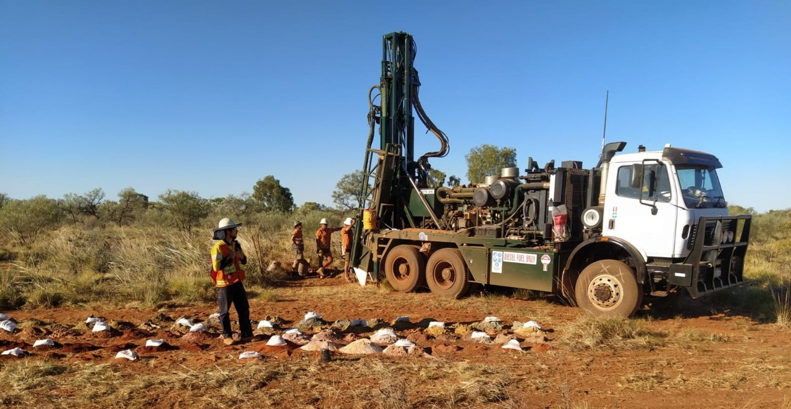

Bienvenido a Drillers
Don’t just learn the ropes. Study them.
Si buscas cursos de capacitación de alta calidad diseñados específicamente para profesionales de la perforación, no busques más.
Nuestra amplia selección de programas diseñados por expertos, que incluyen "Introducción a la Perforación", "Introducción al Petróleo y Gas" y "Prevención de Tubos Atascados", son adecuados tanto para principiantes como para expertos experimentados.
En drillers.com, entendemos la naturaleza siempre cambiante de la industria del petróleo y el gas.
Por eso ofrecemos módulos de capacitación integrales y atractivos diseñados para mantenerte a la vanguardia.

Prevención de tuberías atascadas
Ver más info